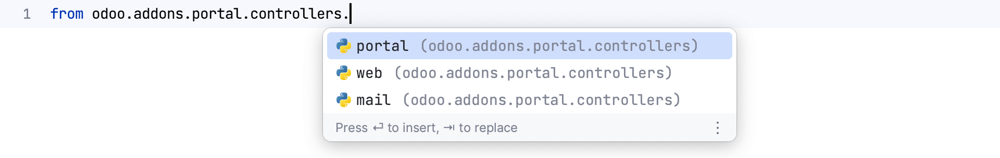
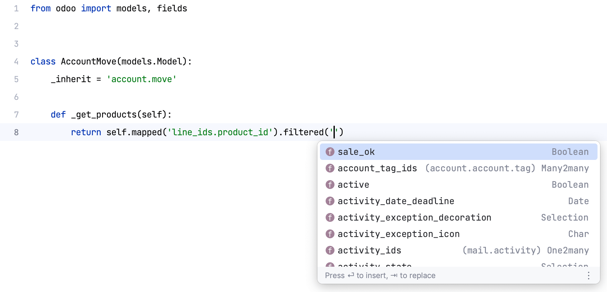
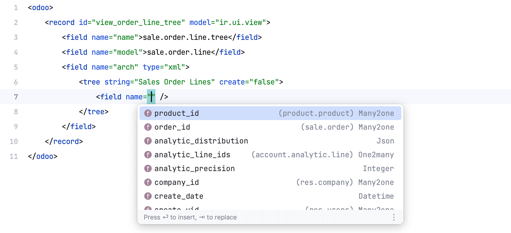
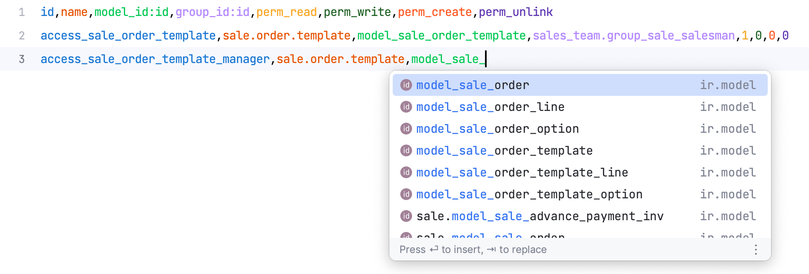
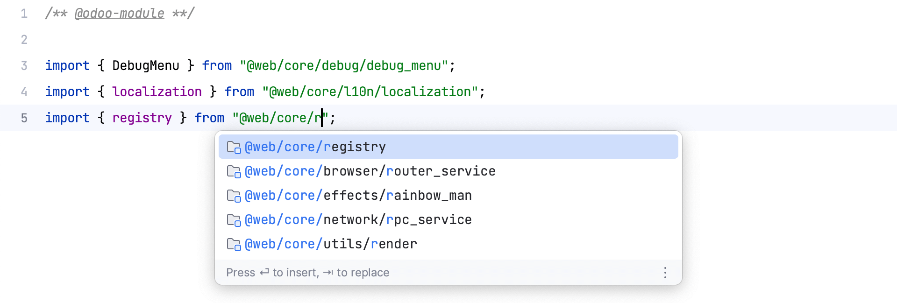

Preview

Coming
Boost your productivity and make your life easier as an Odoo developer
No more red zig-zag underlines indicating errors due to unresolved imports to Odoo modules. Odoo IDE can discover all modules in your project for resolving imports, module files, module dependencies, models, views, data, assets,...
Odoo IDE knows almost everything about Odoo ORM including models, fields, recordsets, inheritance and extension, common methods, environment, method decorators, search domain,... to provide the best code completion and navigation experience for Odoo developers.
Odoo is a data driven framework and XML is the main language for data and view definition. Odoo IDE provides amazing code completion and navigation for tags, attributes, models, fields, external ids, eval expressions,... It even understands view inheritance and xpath.
Though XML is the preferred way to define data for most cases in Odoo, CSV is commonly used to define access rights and some master data such as countries,... And of couse, Odoo IDE also supports code completion and navigation for fields and external ids in CSV files.
Odoo has its own JS Framework which is powerful but needs more support from IDEs. Fortunately, Odoo IDE always strives to keep up with the latest innovations of the framework to provide the best coding experience for Odoo developers.
